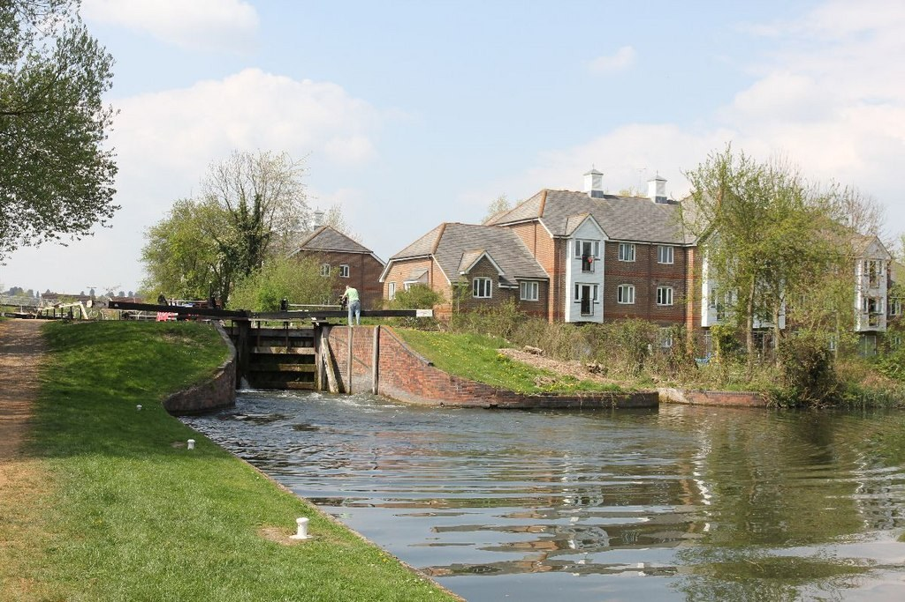
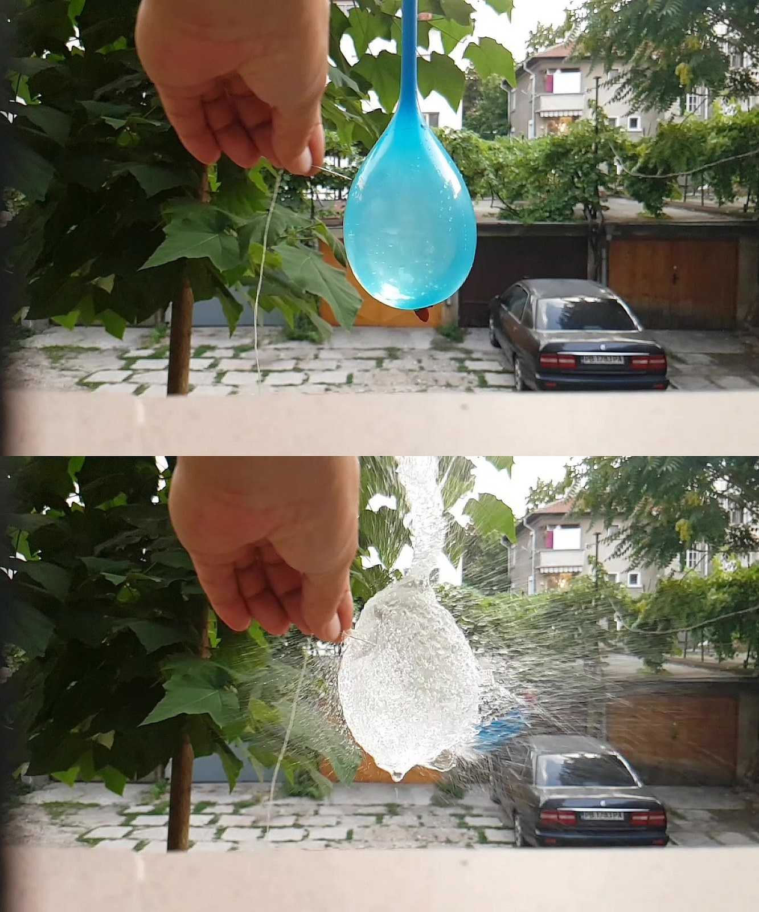
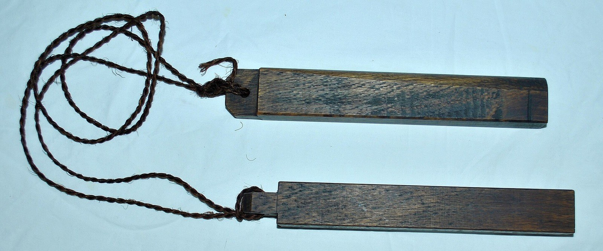
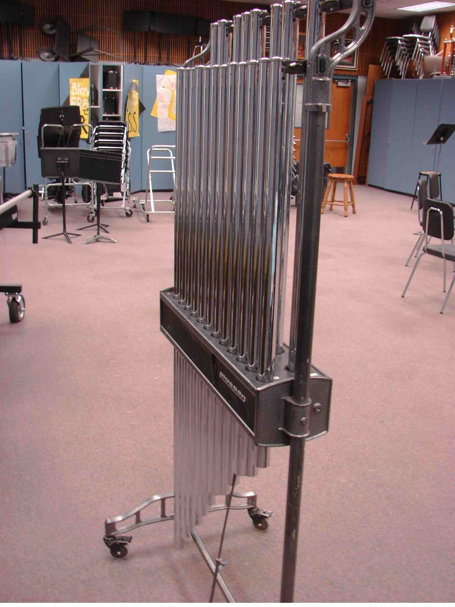
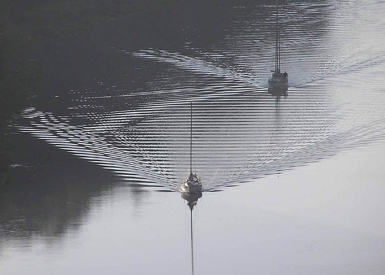
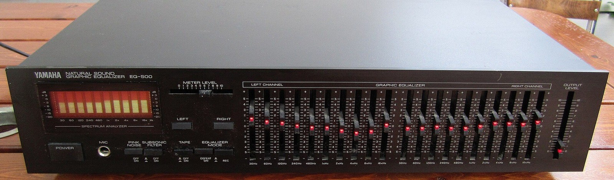
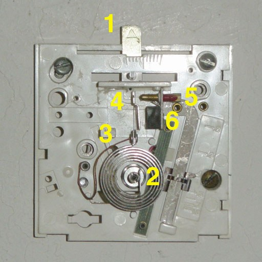
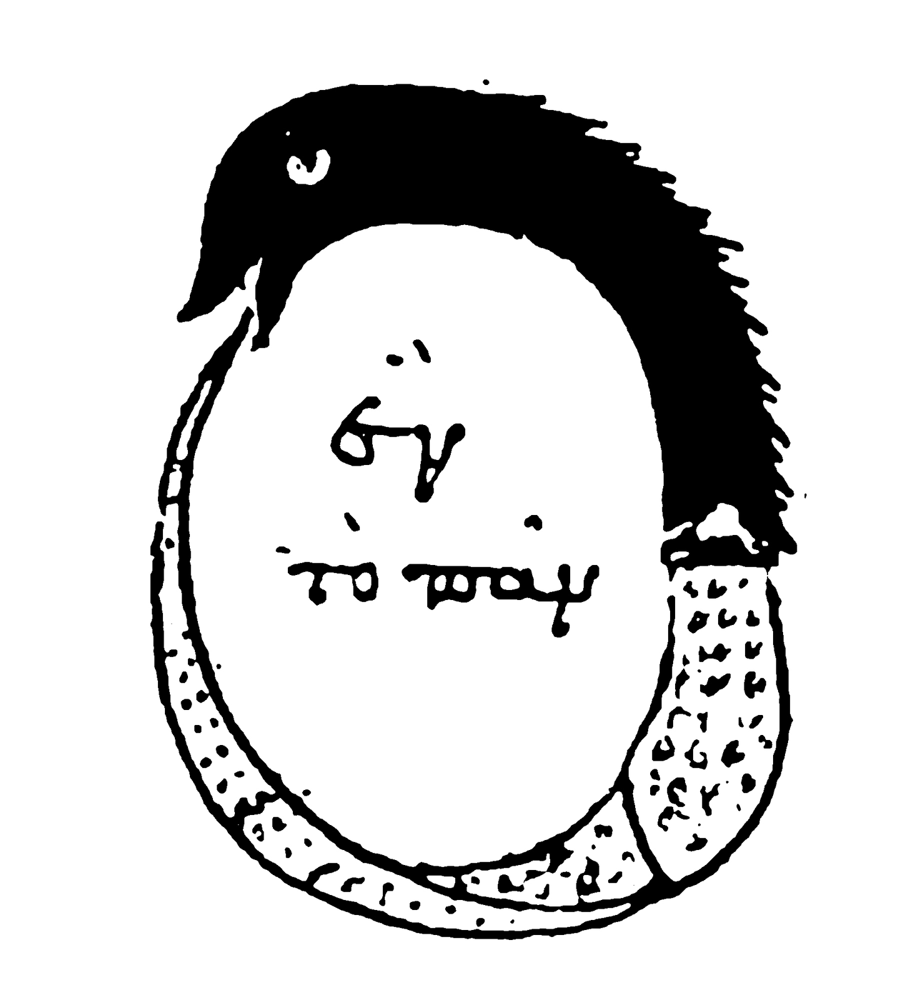

第39回
紫の雲の下の海へ、稲妻が何本も、一瞬で落ちている。
Maxime Raynal（2014年、フランス・ポール＝ラ＝ヌーヴェルの嵐の夜）／CC BY 2.0／Wikimedia Commons（縮小した）
第38回で、微分方程式は代数方程式に化けた。この回では、その代数方程式の「分母」に名前をつける。系に瞬間的な一撃（δ関数）を与えたときの応答が インパルス応答 $h(t)$ で、任意の入力への応答は、$h$ を入力にたたみ込むことで得られる。たたみ込みは $s$ の世界ではただの掛け算になり、その掛け算の因子が伝達関数 $G(s)$ である。最後に、伝達関数を箱として組み合わせるブロック線図とフィードバックを導き、制御工学の入口まで進む。
前提は、第38回（ラプラス変換・微分則・部分分数・極）が中心である。ほかに、第10回（積分・置換）、第30回（強制振動）、第32回（状態方程式・フィードバック）、第34回（複素数）、第37回（周波数応答）を使う。第38回と同じく、$s$ は実数として計算する。
範囲は、ステップ関数・$\delta$ 関数・インパルス応答・たたみ込み・伝達関数・ブロック線図・比例制御の例まで。$\delta$ 関数は、厳密には「関数」ではなく超関数という別の数学の対象で、その理論はここでは扱わない。扱うのは「面積1の細いパルスの極限として、積分の中で働く」という使い方に限る。詳しい扱いは、応用数学Ⅱ（AM2）の第14回（たたみ込み）・第15回（ステップ関数とデルタ関数・システムの応答）、および Lebl Notes on Diffy Qs の第6章（たたみ込み、ディラックのデルタとインパルス応答の節）にある。
制御工学の教科書は、この回の内容をもっと速く書く。本教材は、その教科書を読むための入口として、省かれる記号と手順を全部書く。
最初に、この回で新しく説明する記号と、前の回で説明済みの記号を分けて並べる。右の列の「→」で説明のある場所へ飛べる。
| 記号 | 読み方 | ざっくりした意味 | 説明 |
|---|---|---|---|
| $u(t)$（ステップ関数。$H(t)$ とも） | ユー・オブ・ティー、ステップかんすう | $t\lt0$ で $0$、$t\ge0$ で $1$。時刻 $0$ に入れるスイッチ | →1.2 |
| $\mathcal L\{u(t-a)f(t-a)\}=e^{-as}F(s)$（第二移動） | だいにいどう | 時間を $a$ だけ遅らせると、$e^{-as}$ が掛かる | →1.5 |
| $p_\varepsilon(t)$（細いパルス） | ピー・イプシロン | 幅 $\varepsilon$・高さ $1/\varepsilon$・面積 $1$ の長方形 | →2.2 |
| $\delta(t)$（デルタ関数） | デルタ、ディラックのデルタ | 時刻 $0$ に集中した、面積 $1$ の瞬間的な入力 | →2.3 |
| ふるい性質 $\int f(t)\delta(t-a)\,dt=f(a)$ | ふるいせいしつ | $\delta$ は、積分の中で $f$ の1点の値を取り出す | →2.4 |
| $h(t)$（インパルス応答） | エイチ・オブ・ティー | 系に $\delta$ を入れたときの出力 | →3.1 |
| $(f*g)(t)$（たたみ込み） | エフ・たたみこみ・ジー | $\int_0^t f(t-\tau)g(\tau)\,d\tau$ | →4.3 |
| 省略の段階（たたみ込みの書き方） | ― | $\int_{-\infty}^{\infty}$ から $f*g$ まで | →4.4 |
| $G(s)$（伝達関数） | ジー・オブ・エス、でんたつかんすう | 初期値 $0$ のときの $Y(s)/U(s)$ | →5.1 |
| 極と零点 | きょく、れいてん | $G(s)$ の分母の根／分子の根 | →5.2 |
| ブロック線図 | ブロックせんず | 伝達関数を箱、信号を矢印で描いた図 | →6.1 |
| 閉ループ伝達関数 $\dfrac{G}{1+GH}$ | へいループでんたつかんすう | 出力を入力側に戻す（フィードバック）つなぎ方の全体の伝達関数 | →6.3 |
| 記号 | 意味 | 初出 |
|---|---|---|
| $\mathcal L\{f\}(s)=F(s)$、$\mathcal L^{-1}$ | ラプラス変換、逆変換 | 第38回、逆変換 |
| 線形性、第一移動 | 和と定数倍は外に出せる／$e^{at}$ を掛けると $s$ がずれる | 線形性、第一移動 |
| 微分則 $\mathcal L\{f'\}=sF-f(0)$ | 微分は $s$ を掛けて初期値を引く | 第38回 |
| 積分則 $\mathcal L\{\int_0^tf\}=F/s$ | 積分は $s$ で割る | 第38回 |
| 部分分数分解 | 分数を、分母が簡単な分数の和にする | 第38回 |
| 極、極の位置と応答の型 | $Y(s)$ の分母の根／実部が減衰、虚部が振動を決める | 第38回 5.1 |
| 初期値の項と外力の項 | $Y=\dfrac{\text{初期値の項}+G}{\text{特性多項式}}$ | 第38回 5.2 |
| 広義積分 | $\int_0^\infty=\lim_{T\to\infty}\int_0^T$ | 第38回 |
| 定積分、置換積分、基本定理 | 面積／変数を置き換える積分／積分と微分の関係 | 定積分、置換、基本定理 |
| 特性方程式、$\omega_n$、$\zeta$、$\omega_d$ | 2階線形定数係数の特性方程式／固有角振動数・減衰比・減衰固有角周波数 | 特性方程式、$\omega_n$、$\zeta$、$\omega_d$ |
| 共振 | 外力の周波数が固有周波数に近いと振幅が大きくなる | 第30回 |
| デュアメルの公式 | 入力の履歴を重ねて応答を作る式 | 第31回 |
| 状態方程式 $\dot{\boldsymbol x}=A\boldsymbol x+B\boldsymbol u$、出力方程式、安定性、状態フィードバック | 1階の連立で書いた系／平衡点から戻るか／出力を入力に戻す | 状態方程式、安定性、フィードバック |
| コンパニオン行列 | 高階の方程式を連立1階に直したときの行列 | 第31回 |
| $i$、$e^{i\omega t}$、周波数応答 $H(i\omega)$ | 虚数単位、複素指数関数、正弦波入力への応答 | 第34回、第37回 |
| $:=$、$=$ | 左の名前を右の式で決める／等しい | 第1回 |
PHOTO 1｜現実

運河の木の門が、開かれて、水を通す。
Bill Nicholls（2011年、水門を開ける場面）／CC BY-SA 2.0／Wikimedia Commons（縮小した）
MITATE 1｜見立て
芝居の幕に、妖怪たちが、ひしめいて描かれている。
河鍋暁斎『新富座の引き幕』（Commons の年記は1880年）／Public domain／Wikimedia Commons（縮小した）
第38回では、$t\ge0$ で決まる関数だけを考えた。外力として扱ったのは $1$ や $e^{-t}$ で、「$t=0$ からずっと同じ力が加わり続ける」入力だった。しかし現実の入力は、ある時刻に入り、ある時刻に切れる。スイッチを時刻 $2$ 秒で入れる、$3$ 秒で切る、という入力を式にする道具がない。
この節で、スイッチそのものを関数にする（ステップ関数）。その関数を平行移動すれば「時刻 $a$ に入れる」、2つ引けば「入れて、切る」が書ける。
①読み方：「ユー・オブ・ティー」。「ステップ関数」「単位ステップ関数」「ヘヴィサイドの階段関数」と呼ぶ。
②日本語での意味：時刻 $0$ より前は $0$、時刻 $0$ 以降は $1$ という値をとる関数。時刻 $0$ にスイッチを入れて、そのあと入れっぱなしにする入力を表す。
③省略していない書き方：
$$ u(t)\ :=\ \begin{cases}0 & (t\lt0)\\ 1 & (t\ge0)\end{cases} $$
ここで $t$ は時間を表す実数の変数、$:=$ は第1回の「左の名前を右で決める」記号、中括弧は場合分け（$t$ の範囲ごとに値を決める書き方）である。
④使われる場所：制御工学（ステップ入力・ステップ応答）、電気回路（スイッチを入れる）、信号処理。
図1.1 を見る。上は $u(t)$、下は $u(t-2)$ である。$u(t-2)$ は、$u(t)$ のグラフを右へ $2$ だけ平行移動したもので、$t\lt2$ で $0$、$t\ge2$ で $1$ になる。
なぜ $u(t-2)$ が「時刻 $2$ に入れるスイッチ」になるのかを、数値で確かめる。
① $t=1$ のとき：$u(1-2)=u(-1)$。$-1\lt0$ なので値は $0$。
② $t=2$ のとき：$u(2-2)=u(0)$。$0\ge0$ なので値は $1$。
③ $t=5$ のとき：$u(5-2)=u(3)$。値は $1$。
一般に、$u(t-a)$ は $t-a\lt0$ すなわち $t\lt a$ で $0$、$t\ge a$ で $1$ になる。
| どこで | 書き方 | この教材との違い |
|---|---|---|
| この教材 | $u(t)$、$u(0)=1$ | ― |
| AM2 第15回・多くの工学書 | $H(t)$（ヘヴィサイド）、$\theta(t)$、$1(t)$、$\mathbf 1(t)$ など | 文字が違うだけで同じ関数。$u$ は電気系の教科書に多く、$H$ はこの回の伝達関数 $H(s)$ と紛れるので、この教材では $u$ を使う |
| 一部の数学の本 | $H(0)=\tfrac12$ と決める、または $H(0)$ を決めない | $t=0$ の1点の値は、積分の値を変えない。ラプラス変換や積分で使うときは、どれを選んでも結果は同じ |
$a\ge0$ とする。第38回の定義に入れる。
① $\mathcal L\{u(t-a)\}=\displaystyle\int_0^\infty e^{-st}u(t-a)\,dt$。
② $t\lt a$ では $u(t-a)=0$、$t\ge a$ では $1$。積分を $0$ から $a$ と $a$ から $\infty$ に分けると、前半は $0$、後半は被積分関数が $e^{-st}$。
③ よって $\displaystyle\int_a^\infty e^{-st}\,dt=\lim_{T\to\infty}\left[-\dfrac{e^{-st}}{s}\right]_a^T=\lim_{T\to\infty}\left(\dfrac{e^{-sa}}{s}-\dfrac{e^{-sT}}{s}\right)$。
④ $s\gt0$ なので $e^{-sT}\to0$。結果：
$$ \mathcal L\{u(t-a)\}=\frac{e^{-as}}{s}\qquad(s\gt0) $$
⑤ 確かめ：$a=0$ のとき $u(t)$ は $t\ge0$ で恒等的に $1$ なので、第38回の $\mathcal L\{1\}=\frac1s$ と一致する（$e^{0}=1$）✓。
図1.2 を見る。$u(t-1)-u(t-3)$ は、$t\lt1$ で $0-0=0$、$1\le t\lt3$ で $1-0=1$、$t\ge3$ で $1-1=0$ となる。つまり時刻 $1$ から $3$ の間だけ $1$ になる窓である。
これに高さ $2$ を掛けた $2\bigl[u(t-1)-u(t-3)\bigr]$ は、「時刻 $1$ から $3$ まで、大きさ $2$ の力を加える」入力を表す。
ラプラス変換は線形性で、項ごとに 1.3 を使う：
$$ \mathcal L\{2[u(t-1)-u(t-3)]\}=2\left(\frac{e^{-s}}{s}-\frac{e^{-3s}}{s}\right)=\frac{2\,(e^{-s}-e^{-3s})}{s} $$
第38回の第一移動は「$e^{at}$ を掛けると $s$ が $a$ ずれる」だった。今度は逆に、時間 $t$ のほうをずらすとどうなるかを調べる。
①読み方：「だいにいどう」「時間おくれの定理」。
②日本語での意味：関数 $f(t)$ を時間軸で右へ $a$ だけずらし、ずらす前の部分は $0$ にした関数の変換は、元の変換 $F(s)$ に $e^{-as}$ を掛けたものになる。
③省略していない書き方：$a\ge0$、$F=\mathcal L\{f\}$ として
$$ \mathcal L\{u(t-a)\,f(t-a)\}(s)\ =\ e^{-as}\,F(s) $$
左辺の $u(t-a)f(t-a)$ は、$t\lt a$ では $0$、$t\ge a$ では $f(t-a)$ の値をとる関数。右辺の $F(s)$ は第38回のラプラス変換。
④使われる場所：入力の遅れ・むだ時間（制御工学）、矩形波やパルス列の変換、次章のデルタ関数 $\delta(t-a)$。
導出（途中を省かない）：
① 定義：$\displaystyle\mathcal L\{u(t-a)f(t-a)\}=\int_0^\infty e^{-st}u(t-a)f(t-a)\,dt$。
② 1.3 と同じく $t\lt a$ では被積分関数が $0$。残るのは $\displaystyle\int_a^\infty e^{-st}f(t-a)\,dt$。
③ 置換 $\sigma=t-a$ をする（第10回の置換積分）。$t=a$ のとき $\sigma=0$、$t\to\infty$ のとき $\sigma\to\infty$。$d\sigma=dt$。
④ $e^{-st}$ を $\sigma$ で書く：$t=\sigma+a$ なので $e^{-st}=e^{-s\sigma-sa}=e^{-sa}e^{-s\sigma}$。
⑤ $\displaystyle\int_0^\infty e^{-sa}e^{-s\sigma}f(\sigma)\,d\sigma=e^{-sa}\int_0^\infty e^{-s\sigma}f(\sigma)\,d\sigma$。
⑥ 残りの積分は、変数名が $\sigma$ になっただけの $F(s)$。
よって $\mathcal L\{u(t-a)f(t-a)\}=e^{-as}F(s)$ ∎
最小の具体例：$f(t)=t$ とする。$F(s)=\frac1{s^2}$（第38回の $t^n$）。$a=2$ のとき、遅らせた関数は $u(t-2)\,(t-2)$（$t\lt2$ で $0$、$t\ge2$ で $t-2$ のランプ）。第二移動より
$$ \mathcal L\{u(t-2)(t-2)\}=\frac{e^{-2s}}{s^2} $$
数値で確かめる（$s=1$）：直接積分すると $\displaystyle\int_2^\infty e^{-t}(t-2)\,dt$。置換 $\sigma=t-2$ で $e^{-2}\displaystyle\int_0^\infty\sigma e^{-\sigma}d\sigma=e^{-2}\cdot1$。一方、公式は $\dfrac{e^{-2}}{1^2}=e^{-2}$ ✓。
図1.3 を見る。$f(t)=e^{-t}$ と、それを右へ $2$ ずらした $u(t-2)e^{-(t-2)}$ を重ねた。形は同じで、始まりが $t=2$ になっている。
逆変換での使い方：$\mathcal L^{-1}\left\{\dfrac{e^{-3s}}{s+1}\right\}$ を求める。$\dfrac1{s+1}$ は $e^{-t}$ の変換。$e^{-3s}$ が掛かっているので、第二移動を逆に読んで $u(t-3)\,e^{-(t-3)}$。
第二移動の公式が使えるのは、$u(t-a)$ が掛かった関数の中身も $t-a$ になっているときだけである。たとえば $u(t-2)\,e^{-t}$（スイッチは $2$、中身は $t$）は、そのままでは公式に当てはまらない。中身を $t-2$ に直すために $e^{-t}=e^{-2}e^{-(t-2)}$ と書き換える。
$$ \mathcal L\{u(t-2)e^{-t}\}=e^{-2}\,\mathcal L\{u(t-2)e^{-(t-2)}\}=e^{-2}\cdot\frac{e^{-2s}}{s+1} $$
直接積分 $\displaystyle\int_2^\infty e^{-t}e^{-st}dt=\dfrac{e^{-2(s+1)}}{s+1}$ と一致する（$e^{-2(s+1)}=e^{-2}e^{-2s}$）✓。
PHOTO 2｜現実

割れる前と、割れて5ミリ秒後の水風船が並んでいる。
Dimitar Merdzhanov（2017年、水風船が割れる瞬間）／CC BY 4.0／Wikimedia Commons（縮小した）
MITATE 2｜見立て

紐でつないだ2本の硬い木が、打ち合わせるために置かれている。
Samuraiantiqueworld（2012年、拍子木）／CC BY-SA 3.0／Wikimedia Commons（縮小した）
静止している質量 $m$ の物体をハンマーで叩く。力 $F(t)$ は、ごく短い時間だけ、とても大きくなる。叩く時間を正確に測るのは難しく、叩く強さも時刻ごとに分からない。しかし、運動の結果を決める量はほぼ1つ、力の時間積分 $I=\displaystyle\int F(t)\,dt$（力積）である。理由は、ニュートンの運動方程式 $m\,v'(t)=F(t)$ を叩く時間の前後で積分すると、$m\bigl(v(\text{後})-v(\text{前})\bigr)=I$ となり、速度の変化が力積だけで決まるから。
そこで、「力積 $1$ の一撃」という理想化した入力を1つ用意する。叩く時間を限りなく短く、力を限りなく大きくして、面積（力積）だけを $1$ に保つ。この極限が $\delta$ 関数である。
①読み方：「ピー・イプシロン・オブ・ティー」。$\varepsilon$（イプシロン）は小さな正の数で、パルスの幅を表す。
②日本語での意味：時刻 $0$ から $\varepsilon$ までの間だけ高さ $\dfrac1\varepsilon$ をとり、それ以外では $0$ になる長方形の波。長方形の面積は、幅 $\varepsilon$ × 高さ $\dfrac1\varepsilon=1$ で、$\varepsilon$ によらず一定。
③省略していない書き方：
$$ p_\varepsilon(t)\ :=\ \begin{cases}\dfrac1\varepsilon & (0\le t\lt\varepsilon)\\[4pt] 0 & (\text{それ以外})\end{cases}\ =\ \frac{u(t)-u(t-\varepsilon)}{\varepsilon} $$
右端の式は、1.4 の窓 $u(t)-u(t-\varepsilon)$（時刻 $0$ から $\varepsilon$ まで $1$）を $\varepsilon$ で割ったもの。
④使われる場所：$\delta$ 関数を作る途中の道具（この回）。
図2.1 を見る。$\varepsilon=1,\ \tfrac12,\ \tfrac14$ の3本を重ねた。幅が半分になるたびに高さが2倍になり、面積はいつも $1$ である。
面積の確認：$\displaystyle\int_{-\infty}^{\infty}p_\varepsilon(t)\,dt=\int_0^{\varepsilon}\frac1\varepsilon\,dt=\frac1\varepsilon\cdot\varepsilon=1$。
①読み方：「デルタ・オブ・ティー」。「ディラックのデルタ関数」「単位インパルス」とも呼ぶ。
②日本語での意味：時刻 $0$ のただ1点に集中した、面積（力積）$1$ の瞬間的な入力。「値」をもつ普通の関数ではなく、積分の中に置いたときの働きで決まるものである。
③省略していない書き方：任意の（連続な）関数 $f$ に対して
$$ \int_{-\infty}^{\infty}f(t)\,\delta(t)\,dt\ :=\ \lim_{\varepsilon\to0}\int_{-\infty}^{\infty}f(t)\,p_\varepsilon(t)\,dt $$
つまり、$\delta(t)$ と書いてあったら、「$p_\varepsilon(t)$ で積分を計算してから $\varepsilon\to0$ とする」という意味に読む。左辺の $\delta(t)$ だけを単独で取り出して、$t=0$ での値を問うことはしない。時刻 $a$ に置いたものは $\delta(t-a)$ と書き、$p_\varepsilon(t-a)$ の極限を表す。
④使われる場所：インパルス応答（次章）、力学の衝撃、電気回路の瞬間的な電圧、確率の離散的な点への質量、フーリエ変換の定数や $\sin$ の変換（第37回で予告した部分）。
$\delta$ の記号は $p_\varepsilon$ の極限を表すだけで、「$\delta(0)=\infty$」のような値は定義していない。$\varepsilon\to0$ で幅は $0$ に、高さは $\infty$ になるが、大事なのは面積が $1$ のまま変わらないことである。
①読み方：「ふるいせいしつ」（英語では sifting property）。
②日本語での意味：$\delta(t-a)$ を掛けて積分すると、関数 $f$ の時刻 $a$ での値だけが残る。
③省略していない書き方：$f$ が $t=a$ で連続のとき
$$ \lim_{\varepsilon\to0}\int_{-\infty}^{\infty}f(t)\,p_\varepsilon(t-a)\,dt\ =\ f(a) $$
④使われる場所：$\delta$ のラプラス変換（2.5）、$\delta*f=f$（4.5）。
導出：
① $p_\varepsilon(t-a)$ は $a\le t\lt a+\varepsilon$ で $\frac1\varepsilon$、それ以外で $0$。
② 積分は $\displaystyle\int_{-\infty}^{\infty}f(t)\,p_\varepsilon(t-a)\,dt=\frac1\varepsilon\int_a^{a+\varepsilon}f(t)\,dt$。
③ これは「区間 $[a,a+\varepsilon]$ での $f$ の平均値」（積分を幅で割ったもの）。
④ $f$ は $t=a$ で連続なので、$\varepsilon$ を小さくすれば、区間内のすべての $t$ で $f(t)$ は $f(a)$ にいくらでも近い（第6回の連続）。近い値の平均は、やはり $f(a)$ に近い。
⑤ よって $\varepsilon\to0$ の極限は $f(a)$ ∎
図2.2 を見る。曲線 $f(t)$ の上に細い長方形 $p_\varepsilon(t-a)$ を置くと、$f$ の高さのうち、$t=a$ の近くの値だけが拾われる。
最小の具体例：$\displaystyle\int_{-\infty}^{\infty}(t^2+1)\,\delta(t-2)\,dt$。ふるい性質より、$t=2$ の値を入れて $2^2+1=5$。
$p_\varepsilon$ から始める。
① $\mathcal L\{p_\varepsilon\}=\displaystyle\int_0^{\varepsilon}e^{-st}\cdot\frac1\varepsilon\,dt$。
② 原始関数：$\dfrac1\varepsilon\left[-\dfrac{e^{-st}}{s}\right]_0^{\varepsilon}=\dfrac1\varepsilon\cdot\dfrac{1-e^{-\varepsilon s}}{s}$。
③ $x=\varepsilon s$ とおくと、$\mathcal L\{p_\varepsilon\}=\dfrac{1-e^{-x}}{x}$。
④ $\varepsilon\to0$ のとき $x\to0$。$e^{-x}$ のテイラー展開（第9回）は $e^{-x}=1-x+o(x)$。
⑤ $\dfrac{1-e^{-x}}{x}=\dfrac{x-o(x)}{x}=1-\dfrac{o(x)}{x}\to1$。
よって
$$ \mathcal L\{\delta\}=1 $$
確かめ：ふるい性質（2.4）に $f(t)=e^{-st}$、$a=0$ を入れると $\int e^{-st}\delta(t)\,dt=e^{0}=1$ ✓。時刻 $a$ に置いた $\delta(t-a)$ なら $f(a)=e^{-sa}$ なので、$\mathcal L\{\delta(t-a)\}=e^{-as}$。これは第二移動（1.5）で $f=\delta$、$F=1$ とした式とも合う。
図2.3 を見る。$\varepsilon=1,\ \frac12,\ \frac14$ の $\mathcal L\{p_\varepsilon\}(s)$ を $s$ の関数として描くと、$\varepsilon$ が小さくなるほど、$1$ に近い範囲が右へ広がる。
$\delta(t)$ は時刻 $0$ に集中している。ラプラス変換の積分を $\int_0^\infty$ と書くと、「$t=0$ ちょうどにある $\delta$ を積分の中に入れるのか、外か」が曖昧になる。制御工学では、下限を$0$ の直前を表す $0^-$ にして、「$\delta$ を必ず含める」と決める（第38回 1.7 で予告した点）。この回では、$\delta$ を含む変換はすべて下限を $0^-$ と読む。$f$ が連続の場合は $f(0^-)=f(0)$ で、第38回の結果は変わらない。
図2.4 を見る。$u(t)$ は $t=0$ で $0$ から $1$ へ跳ぶので、そのままでは微分できない。そこで、少しなめらかにして、$0$ から $\varepsilon$ までのあいだに直線で $0$ から $1$ へ上がる関数 $r_\varepsilon(t)$ を作る。
① $r_\varepsilon(t)=0\ (t\lt0)$、$=\dfrac t\varepsilon\ (0\le t\lt\varepsilon)$、$=1\ (t\ge\varepsilon)$。
② 微分すると、$0\lt t\lt\varepsilon$ で傾き $\dfrac1\varepsilon$、それ以外で $0$。これはちょうど $p_\varepsilon(t)$ である。
③ $\varepsilon\to0$ で、$r_\varepsilon\to u$ かつ $p_\varepsilon\to\delta$。よって形の上で $u'=\delta$。
これを微分則で確かめる：$\mathcal L\{u'\}=s\,\mathcal L\{u\}-u(0^-)=s\cdot\dfrac1s-0=1$。これは 2.5 の $\mathcal L\{\delta\}=1$ と一致する ✓。
2.1 の物体に戻る。質量 $m$、時刻 $0$ に静止、$t=0$ に力積 $I$ の一撃を加える：$m\,v'(t)=I\,\delta(t)$、$v(0^-)=0$。
① 両辺のラプラス変換（微分則、$\mathcal L\{\delta\}=1$）：$m\bigl(sV(s)-v(0^-)\bigr)=I$。
② $v(0^-)=0$ を入れて $V(s)=\dfrac{I}{m}\cdot\dfrac1s$。
③ 第38回の変換表の $\frac1s\leftrightarrow1$ より $v(t)=\dfrac Im\,u(t)$。
速度は $t=0$ で $0$ から $\dfrac Im$ に一気にジャンプし、そのあと一定である。図2.5 を見る。上が力（面積 $I$ のパルス）、下が速度。2.1 で言葉で述べた「速度の変化は力積で決まる」を、式が再現した。
①「$\delta(0)=\infty$ で、それ以外は $0$」と覚えるのは不十分で、そう覚えるとなぜ面積が $1$ なのかが説明できなくなる。本質は面積が $1$ のほうである。
② $\delta(t)^2$ や $\delta(t)\cdot\delta(t)$ のように、$\delta$ 同士の積には意味を与えない。$p_\varepsilon^2$ の面積は $\frac1\varepsilon\to\infty$ になり、極限が存在しないためである。
③ 単位の確かめ：$\int\delta(t)\,dt=1$ は無次元（単位なし）。$dt$ の単位が秒なので、$\delta(t)$ の単位は「1/秒」である。力積 $I\delta(t)$ が「力」の単位（N）をもつのは、$I$ が N·s だから。2.7 の式 $m\,v'=I\delta$ は、左辺 kg·(m/s)/s = N、右辺 N·s × (1/s) = N で、単位が合っている ✓。
PHOTO 3｜現実

長さの違う金属の管が、枠に吊るされて並んでいる。
Bjornredtail（チューブラーベル〔管鐘〕）／CC BY-SA 3.0／Wikimedia Commons（縮小した）
MITATE 3｜見立て
青い座布団の上に、金属の鉢と、叩く棒が置かれている。
secretlondon123（2010年、サムイェ・リン〔チベット仏教の施設〕の鈴の鉢）／CC BY-SA 2.0／Wikimedia Commons（縮小した）
この回で扱う系（入力 $g(t)$ を受け取って出力 $y(t)$ を返す仕組み）は、第28〜30回で扱った定数係数の線形微分方程式で書けるものとする。たとえば2階線形定数係数の
$$ y''(t)+a\,y'(t)+b\,y(t)=g(t) $$
で、$a,b$ は定数、$g$ は入力（外力）、$y$ は出力（応答）である。ここで、初期状態を静止（$y(0^-)=0$、$y'(0^-)=0$）にそろえておく。初期値の影響と入力の影響を分けて考えたいからである（第38回 5.2 の「初期値の項」と「外力の項」の分離）。
①読み方：「エイチ・オブ・ティー」。「インパルス応答」「重み関数」とも呼ぶ。
②日本語での意味：静止している系に、時刻 $0$ で面積 $1$ の一撃（$\delta$）を与えたときの出力。
③省略していない書き方：次の初期値問題の解
$$ h''(t)+a\,h'(t)+b\,h(t)=\delta(t),\qquad h(0^-)=0,\ \ h'(0^-)=0 $$
右辺の $\delta(t)$ が2.3 のデルタ関数、$0^-$ が2.5 の「$0$ の直前」である。
④使われる場所：制御工学（系の特性を決める基本量）、信号処理（フィルタ）、構造物の衝撃試験（ハンマーで叩いて応答を測る）。
図3.1 を見る。入力が $\delta$ のときの出力が $h$、入力が一般の $g$ のときの出力が $y$（このあと 4 章で $h$ から作る）という関係を、箱の図で描いた。
第38回 4.1 の4段で解く。
① 変換：$\bigl(s^2H-sh(0^-)-h'(0^-)\bigr)+a\bigl(sH-h(0^-)\bigr)+bH=1$。
② 初期値 $0$ を入れる：$(s^2+as+b)H=1$。
③ $H(s)=\dfrac{1}{s^2+as+b}$。
④ 逆変換して $h(t)$ を得る。
この $H(s)$ は、第38回 5.2 で「外力の変換に掛かる箱」と呼んだものと同じである。入力 $\delta$ の変換が $1$ なので、出力の変換 $H$ が、そのまま箱の中身になる。
例1（1階）：$y'+ay=\delta(t)$、$y(0^-)=0$（$a\gt0$）。
① 変換：$(sY-0)+aY=1$。
② $Y=\dfrac1{s+a}$。
③ 変換表より $h(t)=e^{-at}$（$t\ge0$）。
意味：$t=0$ の一撃で出力が $0$ から $1$ へジャンプし（$h(0^+)=1$）、そのあとは一撃のない自由な減衰 $y'+ay=0$ にしたがって減る。確かめ：$t\gt0$ で $h'+ah=-ae^{-at}+ae^{-at}=0$ ✓。ジャンプの大きさ：$h'+ah=\delta$ の両辺を $0^-$ から $0^+$ まで積分すると、$h(0^+)-h(0^-)+a\int h\,dt=1$。$h$ は有限なので $a\int h\,dt\to0$、$h(0^+)=1$ ✓。
図3.2 を見る。上が $a=1$ と $a=3$ のインパルス応答。$a$ が大きいほど、立ち上がりは同じ $1$ で、速く消える。
例2（2階）：$y''+3y'+2y=\delta(t)$、$y(0^-)=y'(0^-)=0$。
① 3.2 の③より $H(s)=\dfrac1{s^2+3s+2}=\dfrac1{(s+1)(s+2)}$。
② 部分分数分解（被覆法、第38回 4.2）：$\dfrac{A}{s+1}+\dfrac{B}{s+2}$、$A=\dfrac1{-1+2}=1$、$B=\dfrac1{-2+1}=-1$。
③ 逆変換：$h(t)=e^{-t}-e^{-2t}$。
④ 確かめ：$h(0)=1-1=0$ ✓、$h'(t)=-e^{-t}+2e^{-2t}$ なので $h'(0)=1$ ✓。$t=0$ の一撃で、位置は $0$ のまま、速度が $1$ に跳ぶ（質量 $1$ に力積 $1$ を与えた結果と同じ。2.7）。$t\gt0$ では $h''+3h'+2h=(1-3+2)e^{-t}+(-4+6-2)e^{-2t}=0$ ✓。
図3.3 の上段が、この $h(t)$ である。動き出して、いったん正に伸びてから戻る。
入力が $u(t)$（ステップ）のときの出力をステップ応答という。入力 $u$ の変換は $\frac1s$ なので、出力の変換は $\dfrac{H(s)}{s}$。積分則 $\mathcal L\{\int_0^tf\}=\frac{F}{s}$ から、時間の側では
$$ y_{\text{step}}(t)=\int_0^t h(\tau)\,d\tau $$
（インパルス応答を積分したもの）である。例2で計算する：
① $\displaystyle\int_0^t(e^{-\tau}-e^{-2\tau})\,d\tau=\bigl[-e^{-\tau}\bigr]_0^t-\left[-\tfrac12e^{-2\tau}\right]_0^t$。
② $=(1-e^{-t})-\tfrac12(1-e^{-2t})=\tfrac12-e^{-t}+\tfrac12e^{-2t}$。
これは第38回 4.7 の例4（$y''+3y'+2y=1$、$y(0)=y'(0)=0$）の答えと一致する ✓。あの例の「外力 $1$」は、$t\ge0$ で $1$、つまりステップ入力 $u(t)$ だった。図3.3 の下段が $y_{\text{step}}$ である。$t\to\infty$ で $\frac12$ に近づく。
確かめ：最終値 $\frac12$ は、入力 $1$ に対して $y''=y'=0$ とおいた $2y=1$ の解 $y=\frac12$（つり合いの位置）に等しい。また、$\int_0^\infty h\,dt=\frac12=H(0)=\dfrac1{0^2+3\cdot0+2}$ ✓（$s=0$ のとき $\mathcal L\{h\}=\int_0^\infty h\,dt$）。
$y''+2\zeta\omega_n y'+\omega_n^2y=\delta(t)$（減衰比 $\zeta$、固有角振動数 $\omega_n$）で $0\lt\zeta\lt1$ のとき、$H(s)=\dfrac1{(s+\zeta\omega_n)^2+\omega_d^2}$（$\omega_d=\omega_n\sqrt{1-\zeta^2}$、減衰固有角周波数）となる。第一移動と $\sin$ の変換から
$$ h(t)=\frac{1}{\omega_d}\,e^{-\zeta\omega_nt}\sin\omega_dt $$
になる。具体的に $y''+2y'+5y=\delta$（$\zeta\omega_n=1$、$\omega_d=2$）なら $h(t)=\tfrac12e^{-t}\sin2t$。確かめ：$h(0)=0$ ✓、$h'(0)=\tfrac12\cdot2\cdot\cos0=1$ ✓。この $h$ は、減衰しながら振動する。第38回の例3と同じ形である。
PHOTO 4｜現実

2隻の船の航跡が、水面で広がって、交わる。
Arpingstone（2隻の船の航跡）／Public domain／Wikimedia Commons（縮小した）
$h$ は「一撃」への応答である。しかし、現実の入力 $g(t)$ は、正弦波だったり、ゆっくり増えたりと一撃ではない。$h$ だけを知っていれば、任意の $g$ への応答が作れる。そのために、系について次の2つの性質を使う。
(L) 線形性：入力を $c$ 倍すれば出力も $c$ 倍。入力を足せば出力も足される。
(T) 時間不変性：入力を $\tau$ だけ遅らせると、出力も同じ形で $\tau$ だけ遅れるだけ。
理由：定数係数の線形微分方程式なので、(L) は微分が線形であること（和と定数倍を外に出せる）から、(T) は係数が時間 $t$ によらないこと（方程式の形が時刻をずらしても変わらない）から従う。初期状態は静止にそろえてある。
図4.1 を見る。入力 $g(t)$ を、幅 $\Delta\tau$ の短冊に分ける。$k$ 番目の短冊は、時刻 $\tau_k=k\,\Delta\tau$ のところにあり、高さは約 $g(\tau_k)$ である。
① $k$ 番目の短冊は、「面積 $g(\tau_k)\Delta\tau$ の細いパルスを、時刻 $\tau_k$ に与えた」入力とほぼ同じ。つまり $g(\tau_k)\,\Delta\tau\cdot\delta(t-\tau_k)$。
② (T) より、$\delta(t-\tau_k)$ への応答は $h(t-\tau_k)$。
③ (L) より、定数 $g(\tau_k)\Delta\tau$ 倍して、$g(\tau_k)\,\Delta\tau\,h(t-\tau_k)$。
④ すべての短冊について足す（(L)）：
$$ y(t)\ \approx\ \sum_{k}g(\tau_k)\,h(t-\tau_k)\,\Delta\tau $$
⑤ $\Delta\tau\to0$ とすると、右辺の和はリーマン和で、積分になる。
⑥ 和の範囲：$\tau_k\gt t$ の短冊は、時刻 $t$ より未来に与えられた入力なので、時刻 $t$ の出力にまだ影響しない。実際、$t\lt\tau_k$ のとき $h(t-\tau_k)=0$（$h$ は $t\lt0$ で $0$）。だから積分は $0$ から $t$ まで。
図4.2 を見る。上は4本の短冊それぞれへの応答、下はそれらの和（太線）で、細かく分けるほど正確な応答に近づく。
$$ y(t)=\int_0^t h(t-\tau)\,g(\tau)\,d\tau $$
①読み方：「エフ たたみこみ ジー」（「エフ・アスタリスク・ジー」とも）。「畳み込み」「合成積」「コンボリューション」。
②日本語での意味：2つの関数 $f,g$ について、$g$ の各時刻 $\tau$ の値に、$f$ を左右反転して時刻 $t$ に合わせた値を掛けて、$\tau$ について足した（積分した）もの。入力の履歴を、系の「重み」で足し合わせるという意味をもつ。
③省略していない書き方：$f,g$ がどちらも $t\lt0$ で $0$ の関数のとき
$$ (f*g)(t)\ :=\ \int_{0}^{t}f(t-\tau)\,g(\tau)\,d\tau $$
ここで $t$ は結果を見たい時刻（積分のあとに残る）、$\tau$（タウ）は積分の内側だけで使う変数、$f(t-\tau)$ が「$f$ を反転して $t$ に合わせた」もの、$g(\tau)$ が入力。結果は $t$ の関数になる。
④使われる場所：制御工学・信号処理（システムの応答）、確率（独立な確率変数の和の分布）、画像処理（ぼかしフィルタ）、第31回のデュアメルの公式は同じ形の式。
4.2 の結果は、この記号で $y=h*g$ と書ける。
| 段階 | 書き方 | 省いたもの | 省いても誤解が起きない理由（と、起きる場面） |
|---|---|---|---|
| S0 | $\displaystyle(f*g)(t)=\int_{-\infty}^{\infty}f(t-\tau)\,g(\tau)\,d\tau$ | （省略なし） | 一般の定義。$f,g$ が負の時刻で $0$ でなくても使える（フーリエ変換ではこちら）。 |
| S1 | $\displaystyle(f*g)(t)=\int_{0}^{t}f(t-\tau)\,g(\tau)\,d\tau$ | $-\infty$ から $0$ と、$t$ から $\infty$ の範囲 | $g(\tau)=0\ (\tau\lt0)$ なので下限は $0$、$f(t-\tau)=0\ (\tau\gt t)$ なので上限は $t$。注意：ラプラス変換で使う関数は $t\lt0$ で $0$ とみなすので、この形で足りる。 |
| S2 | $(f*g)(t)$ | 積分の式 | 「$*$ は S1 の操作の名前」と決めたから。注意：括弧の中の $t$ は結果の変数。 |
| S3 | $f*g$ | 引数 $(t)$ | 結果は $t$ の関数と文脈で決まるから。注意：$f*g(t)$ と書くと、「$g(t)$ という数と $f$ のたたみ込み」にも読めてしまうので、この教材では使わない。 |
この回では、計算するとき S1 を、結果を述べるとき S2〜S3 を使う。
読み方（4つの手順）：時刻 $t$ を1つ決める。
① $f$ を左右に反転する：$f(-\tau)$。
② それを右へ $t$ だけ動かす：$f(t-\tau)$。
③ $g(\tau)$ と、$\tau$ ごとに掛ける。
④ $\tau=0$ から $t$ まで積分（面積）する。それが $(f*g)(t)$ の、この $t$ での値。
図4.3 を見る。$f=h=e^{-t}$、$g=1$（ステップ入力）、$t=2$ の場合。上段が $g(\tau)$、中段が反転して $t=2$ に合わせた $h(2-\tau)$、下段がその積で、塗った面積が $y(2)$ である。
計算例1：$e^{-t}*1$。
① 定義：$\displaystyle\int_0^te^{-(t-\tau)}\cdot1\,d\tau$。
② $e^{-(t-\tau)}=e^{-t}e^{\tau}$ と分ける。$e^{-t}$ は $\tau$ によらないので外へ：$e^{-t}\displaystyle\int_0^te^{\tau}d\tau$。
③ $\displaystyle\int_0^te^{\tau}d\tau=e^{t}-1$。
④ よって $e^{-t}(e^{t}-1)=1-e^{-t}$。
確かめ：図4.3 で $t=2$ のとき面積 $1-e^{-2}\approx0.865$ ✓。図4.4 に $y(t)=1-e^{-t}$ を、いくつかの $t$ の面積とともに描いた。この結果は、3.2 例1 の1階の系（$a=1$、$h=e^{-t}$）のステップ応答 $\int_0^th\,d au=1-e^{-t}$ と一致する ✓（3.3 の「ステップ応答はインパルス応答の積分」の1階版）。
計算例2：$1*1$。$\displaystyle\int_0^t1\cdot1\,d\tau=t$。
計算例3：$e^{-t}*e^{-2t}$。
① $\displaystyle\int_0^te^{-(t-\tau)}e^{-2\tau}d\tau=e^{-t}\int_0^te^{\tau-2\tau}d\tau=e^{-t}\int_0^te^{-\tau}d\tau$。
② $\displaystyle\int_0^te^{-\tau}d\tau=1-e^{-t}$。
③ $e^{-t}(1-e^{-t})=e^{-t}-e^{-2t}$。
これは 3.2 例2 のインパルス応答 $h$ と同じ関数である。なぜ一致するのかは、5.1 で分かる。
(i) 交換則 $f*g=g*f$。導出：$\displaystyle(f*g)(t)=\int_0^tf(t-\tau)g(\tau)\,d\tau$ で、置換 $\sigma=t-\tau$ をする（置換積分）。$\tau=0$ のとき $\sigma=t$、$\tau=t$ のとき $\sigma=0$。$d\tau=-d\sigma$。向きが逆になる符号 $-$ は、積分の上下端を入れ替えて打ち消す。結果：$\displaystyle\int_0^tf(\sigma)\,g(t-\sigma)\,d\sigma=(g*f)(t)$ ∎。
(ii) 結合則・分配則 $(f*g)*k=f*(g*k)$、$f*(g+k)=f*g+f*k$（導出は省略。分配則は積分の線形性、結合則は二重積分の順序交換から出る）。
(iii) $\delta$ との関係 $\delta*f=f$。ふるい性質（2.4）より、$\displaystyle\int\delta(t-\tau)f(\tau)\,d\tau=f(t)$ ✓。つまり $\delta$ はたたみ込みの単位元（掛け算の $1$ にあたる）で、入力 $\delta$ の応答 $h*\delta=h$ という定義とつじつまが合う。
$f,g$ のラプラス変換 $\mathcal L\{f\}$、$\mathcal L\{g\}$ が存在する $s$ で、$\mathcal L\{f*g\}(s)=\mathcal L\{f\}(s)\,\mathcal L\{g\}(s)$ が成り立つ。（時間の側のたたみ込みは、$s$ の側の積になる。）
① $\mathcal L\{f\}\,\mathcal L\{g\}=\left(\displaystyle\int_0^\infty e^{-s\sigma}f(\sigma)\,d\sigma\right)\left(\int_0^\infty e^{-s\tau}g(\tau)\,d\tau\right)$。
② 積を二重積分にまとめる：$\displaystyle\int_0^\infty\!\!\int_0^\infty e^{-s(\sigma+\tau)}f(\sigma)g(\tau)\,d\sigma\,d\tau$。
③ 先に $\tau$ を固定し、$\sigma$ の積分の変数を $t=\sigma+\tau$ に置換する。$\sigma=0\to t=\tau$、$\sigma\to\infty\Rightarrow t\to\infty$、$d\sigma=dt$、$\sigma=t-\tau$。
④ $\displaystyle\int_0^\infty\!\left(\int_\tau^\infty e^{-st}f(t-\tau)\,dt\right)g(\tau)\,d\tau$。
⑤ 積分の順序を入れ替える。図4.5 を見る。④の積分の範囲は「$0\le\tau$ かつ $\tau\le t$」の領域（$t$ 軸と $\tau$ 軸の平面の、$\tau=t$ の直線より下の三角形）である。同じ領域を「先に $\tau$ を $0$ から $t$ まで、そのあと $t$ を $0$ から $\infty$ まで」と数え直せる。
⑥ $\displaystyle\int_0^\infty e^{-st}\left(\int_0^tf(t-\tau)g(\tau)\,d\tau\right)dt$。内側が $(f*g)(t)$ の定義 S1。
⑦ これは $\mathcal L\{f*g\}$ の定義そのもの。∎
確かめ：計算例3 の $e^{-t}*e^{-2t}=e^{-t}-e^{-2t}$ を変換すると $\dfrac1{s+1}-\dfrac1{s+2}=\dfrac{1}{(s+1)(s+2)}$。一方、$\mathcal L\{e^{-t}\}\mathcal L\{e^{-2t}\}=\dfrac1{s+1}\cdot\dfrac1{s+2}$ ✓。計算例2：$1*1=t$ の変換は $\frac1{s^2}$、$\frac1s\cdot\frac1s=\frac1{s^2}$ ✓。
第38回 2.7 で保留した問い「積の変換が、変換の積にならないなら、変換の積に対応する時間の側の演算は何か」の答えが、たたみ込みである。
① $f*g\ne f\cdot g$。たとえば $1*1=t$ だが、$1\cdot1=1$。
② $1*g$ は $g$ にならない。$1*g=\displaystyle\int_0^tg(\tau)\,d\tau$（$g$ の積分）。$\delta*g=g$ のほうが「掛けても変わらない」関数である。積分則の $F/s$ は、$\frac1s\cdot G$、つまり $1*g$ の変換だと読める ✓。
③ $f*g$ の括弧に注意。$(f*g)(t)$ は「$t$ を固定して作る積分」であって、「$f(t)$ と $g(t)$ の積」ではない。
PHOTO 5｜現実

周波数の帯ごとに、つまみが並んでいる。
Touho_T（2010年、ヤマハのグラフィックイコライザー）／CC BY 2.0／Wikimedia Commons（縮小した）
MITATE 5｜見立て
色ガラスを通った光が、暗い床に、模様を落とす。
Ayyoubsabawiki（2015年、イラン・シーラーズのナスィーロル・モルク・モスク）／CC BY-SA 4.0／Wikimedia Commons（縮小した）
4 章で、入力 $g$ に対する出力が $y=h*g$ であることを得た。両辺をラプラス変換し、4.6 の定理を使う。入力 $g$ の変換を $U(s)=\mathcal L\{g\}(s)$ と書くと（以後、入力の文字は $u$ も使う。ステップ関数 $u(t)$ と紛れるときは、文脈で区別する）、
$$ Y(s)=H(s)\,U(s) $$
出力の変換は、入力の変換に $H(s)$ を掛けるだけで得られる。この $H(s)$ に名前をつける。
①読み方：「ジー・オブ・エス」。「でんたつかんすう」（英語で transfer function）。
②日本語での意味：入力、出力、およびそれらの導関数の初期値がすべて $0$ のとき、出力の変換を入力の変換で割ったもの。系が入力をどう「伝えて」出力にするかを、$s$ の関数で表したもの。
③省略していない書き方：
$$ G(s)\ :=\ \frac{Y(s)}{U(s)}\ =\ \frac{\mathcal L\{y\}(s)}{\mathcal L\{u\}(s)}\qquad(\text{初期値}=0) $$
ここで $U(s)$ は入力 $u(t)$ のラプラス変換、$Y(s)$ は出力 $y(t)$ の変換。たとえば $a_2y''+a_1y'+a_0y=b_1u'+b_0u$ なら、微分則（初期値 $0$）で $(a_2s^2+a_1s+a_0)Y=(b_1s+b_0)U$ となるので
$$ G(s)=\frac{b_1s+b_0}{a_2s^2+a_1s+a_0} $$
④使われる場所：制御工学（制御系の設計・解析）、電気回路（インピーダンス）、振動工学、信号処理。教科書では、本回の $G(s)$ のかわりに $H(s)$ と書く本もある（下の「流派の違い」）。
入力が $\delta$ のとき $U=1$ なので、$Y=G$。つまり伝達関数は、インパルス応答のラプラス変換：
$$ G(s)=\mathcal L\{h\}(s),\qquad h(t)=\mathcal L^{-1}\{G(s)\} $$
3.2 の $H(s)=\dfrac1{s^2+as+b}$ は、この意味で伝達関数 $G(s)$ そのものである（入力が $u$ の方程式 $y''+ay'+by=u$ について）。4.5 の計算例3 で $e^{-t}*e^{-2t}$ が $h$ と一致したのは、$\mathcal L\{e^{-t}*e^{-2t}\}=\frac1{s+1}\cdot\frac1{s+2}=G(s)$ だったためである。
図5.1 を見る。上段は時間の世界で、入力 $u(t)$ にたたみ込み $h*$ を施して出力 $y(t)$ を得る。下段は $s$ の世界で、$U(s)$ に $G(s)$ を掛けて $Y(s)$ を得る。積分の計算が、掛け算に化ける。
| どこで | 書き方 | この教材との違い |
|---|---|---|
| この教材 | $G(s)=Y(s)/U(s)$、インパルス応答は $h(t)$ | ― |
| 制御工学の多くの本 | 制御対象を $P(s)$ または $G(s)$、制御器を $C(s)$ または $K(s)$、フィードバックを $H(s)$ と書く | この教材は、制御対象や1つの箱を $G$、フィードバック側を $H$ と書く（6 章） |
| 信号処理・AM2 | 系の伝達関数・周波数特性を $H(\cdot)$ と書く | 第37回の $H(i\omega)$ は、この回の $G(s)$ で $s=i\omega$ としたもの（5.4） |
| 電気・制御 | 虚数単位に $j$ を使う | $s=j\omega$ と書く |
①読み方：「きょく」（極、英語で pole）、「れいてん」（零点、zero）。
②日本語での意味：伝達関数 $G(s)=\dfrac{B(s)}{A(s)}$（分子 $B$、分母 $A$ は $s$ の多項式で、共通の因子は約分済み）について、分母が $0$ になる $s$ を極、分子が $0$ になる $s$ を零点という。
③省略していない書き方：
$$ \text{極}:\ A(s)=0\ \text{の根}\qquad\text{零点}:\ B(s)=0\ \text{の根} $$
極は、第38回 5.1 の極（$Y(s)$ の分母の根）と同じ考え方。$A(s)$ は特性多項式で、極は特性方程式の根にあたる。複素数になることもあるので、$s$ 平面（複素平面、第34回）に点として描く。
④使われる場所：制御系の安定判別、応答の型の見積もり、フィルタ設計。
図5.2 を見る。例として $G(s)=\dfrac{s+2}{s^2+2s+5}$ の零点は $s=-2$、極は $s^2+2s+5=0$ より $s=-1\pm2i$。×が極、○が零点、塗った左半平面が「実部が負」の範囲である。
極と応答：$h=\mathcal L^{-1}\{G\}$ は、部分分数分解（第38回 4.2）で極ごとの項に分かれる。極 $p$ が実数なら $e^{pt}$ の項、複素数 $p=\sigma\pm i\omega$ なら $e^{\sigma t}\cos\omega t$ と $e^{\sigma t}\sin\omega t$ の項（第38回 5.1）。すべての極の実部が負なら、$h(t)\to0$ で、指数関数的に速く $0$ に近づく。
安定性（入出力の意味で）：すべての極の実部が負のとき、有界な入力には有界な出力が返る。理由：入力の大きさが $|g(t)|\le M$ を超えないとする。4.2 の式から
$$ |y(t)|=\left|\int_0^th(t-\tau)\,g(\tau)\,d\tau\right|\ \le\ M\int_0^t|h(t-\tau)|\,d\tau\ \le\ M\int_0^\infty|h(\sigma)|\,d\sigma $$
（絶対値の積分は、積分の絶対値以上。2つ目の不等号は置換 $\sigma=t-\tau$ と、積分範囲を広げること。）最右辺は、$h$ が指数関数的に減衰するなら有限の数である。
逆に、極が虚軸上か右半平面にあれば、有界な入力で出力が有界でなくなる例がある：
・$G=\dfrac1s$（極 $0$）：$h=u$、入力 $1$ のとき $y=1*1=t\to\infty$（4.5 計算例2）。
・$G=\dfrac1{s^2+1}$（極 $\pm i$）：$h=\sin t$、入力 $\sin t$ のとき出力が $t$ に比例して大きくなる（演習 問10。第30回の共振）。
・$G=\dfrac1{s-1}$（極 $1$）：$h=e^{t}$ で、入力が何でも指数関数的に増える。
これは第32回の安定性（行列の固有値の実部がすべて負）と同じ内容である。5.5 で、極が固有値であることを示す。
図5.3 を見る。物理の種類が違っても、微分方程式の形が同じなら、伝達関数も同じ形になる。
(a) RC 回路：抵抗 $R$ とコンデンサ $C$ を直列につなぎ、入力電圧 $u$ を加えて、コンデンサの電圧 $y$ を出力とする。電流を $i$ とすると、抵抗の電圧降下 $Ri$ とコンデンサの電圧 $y$ の和が入力に等しい：$Ri+y=u$。コンデンサの電流と電圧の関係は $i=Cy'$。
① 代入：$RC\,y'+y=u$。
② 変換（初期値 $0$）：$(RCs+1)Y=U$。
③ $G(s)=\dfrac1{RCs+1}$。極は $s=-\dfrac1{RC}$（負）。$T=RC$ は時定数で、$h(t)=\dfrac1Te^{-t/T}$。
(b) 質量・ばね・ダンパ：質量 $m$、ばね定数 $k$、減衰係数 $c$ の系に外力 $f(t)$ を加えて、位置 $x$ を出力とする（第30回）。運動方程式 $m\,x''+c\,x'+k\,x=f$。
① 変換（初期値 $0$）：$(ms^2+cs+k)X=F$。
② $G(s)=\dfrac{X(s)}{F(s)}=\dfrac1{ms^2+cs+k}$。
③ 極：解の公式より $s=\dfrac{-c\pm\sqrt{c^2-4mk}}{2m}$。$m,c,k\gt0$ なら安定：根号の中が $\ge0$ のとき $\sqrt{c^2-4mk}\lt c$（$mk\gt0$ だから）で、2根とも負。根号の中が負のとき実部は $-\dfrac{c}{2m}\lt0$。
④ 確かめ：$s=0$ の値 $G(0)=\dfrac1k$ は、一定の力 $f_0$ をかけたときの静的なたわみ $x=\dfrac{f_0}{k}$ と一致する（つり合い：$kx=f_0$）✓。$m=1,c=2,k=5$ なら 3.4 の $y''+2y'+5y=\delta$ と同じ式で、極は $-1\pm2i$。
この2つは、まったく違う物理量（電圧と位置）でも、(a) は1階、(b) は2階というだけで、同じ手順で伝達関数が決まる。
入力が複素正弦波 $u(t)=e^{st}$ のとき（$s$ は後で $i\omega$ にする）、出力は $G(s)\,e^{st}$ の形の解をもつ。
① 系を $A(D)y=B(D)u$（$D=\dfrac d{dt}$ で、$A(D)$ は $D$ の多項式）と書く。
② $e^{st}$ を $D$ で作用させると $De^{st}=se^{st}$。よって $A(D)e^{st}=A(s)e^{st}$、$B(D)e^{st}=B(s)e^{st}$。
③ 解を $y=c\,e^{st}$ と予想して代入：$A(s)\,c\,e^{st}=B(s)\,e^{st}$。
④ $c=\dfrac{B(s)}{A(s)}=G(s)$。つまり $y=G(s)\,e^{st}$。
⑤ $s=i\omega$ とすると、入力 $e^{i\omega t}$ に対して出力 $G(i\omega)\,e^{i\omega t}$。安定な系では、過渡部分（初期値によって決まる $e^{pt}$ の項）が消えたあと、この形だけが残る（第30回の定常解）。
$G(i\omega)$ は複素数なので、極形式（第34回）で $G(i\omega)=|G(i\omega)|\,e^{i\arg G(i\omega)}$ と書く。出力は入力に比べて、振幅が $|G(i\omega)|$ 倍（ゲイン）、位相が $\arg G(i\omega)$ だけずれる。これが第34回の周波数応答、第37回の $H(i\omega)$の正体である。
確かめ（1階）：$y'+ay=u$ で $G(s)=\dfrac1{s+a}$。$u=e^{i\omega t}$ に対し、$y=\dfrac{e^{i\omega t}}{a+i\omega}$ は $y'+ay=\dfrac{(i\omega+a)e^{i\omega t}}{a+i\omega}=e^{i\omega t}$ を満たす ✓（第37回の $H(i\omega)=\frac1{a+i\omega}$ と同じ）。
図5.4 を見る。2階の系 $G(s)=\dfrac{1}{s^2+2\zeta s+1}$（$\omega_n=1$）のゲイン $|G(i\omega)|=\dfrac1{\sqrt{(1-\omega^2)^2+(2\zeta\omega)^2}}$ を、$\zeta=0.1,\ 0.3,\ 0.7$ で描いた。$\zeta\lt\frac1{\sqrt2}$ のとき、$\omega=\sqrt{1-2\zeta^2}$ でピーク $\dfrac1{2\zeta\sqrt{1-\zeta^2}}$ をとる。$\zeta=0.1$ ならピーク約 $5.03$ で、減衰が弱いほど共振（第30回）が強くなる。
第32回の状態方程式 $\dot{\boldsymbol x}=A\boldsymbol x+B u$、出力 $y=C\boldsymbol x$（$u$ はスカラーの入力）の伝達関数を求める。初期状態 $\boldsymbol x(0)=\boldsymbol 0$ とする。
① 変換：$s\boldsymbol X=A\boldsymbol X+B\,U$。
② $\boldsymbol X$ を左に集める：$(sI-A)\boldsymbol X=B\,U$。
③ 逆行列を掛ける：$\boldsymbol X=(sI-A)^{-1}B\,U$。
④ $Y=C\boldsymbol X$ より
$$ G(s)=\frac{Y}{U}=C\,(sI-A)^{-1}B $$
最小の具体例：$y''+3y'+2y=u$ をコンパニオン行列で書く。$\boldsymbol x=(y,\ y')^{\mathsf T}$、$A=\begin{pmatrix}0&1\\-2&-3\end{pmatrix}$、$B=\begin{pmatrix}0\\1\end{pmatrix}$、$C=\begin{pmatrix}1&0\end{pmatrix}$。
⑤ $sI-A=\begin{pmatrix}s&-1\\2&s+3\end{pmatrix}$、行列式は $s(s+3)+2=s^2+3s+2$。
⑥ 逆行列は $\dfrac1{s^2+3s+2}\begin{pmatrix}s+3&1\\-2&s\end{pmatrix}$。
⑦ $(sI-A)^{-1}B=\dfrac1{s^2+3s+2}\begin{pmatrix}1\\s\end{pmatrix}$、$C$ を掛けて $G(s)=\dfrac1{s^2+3s+2}$。これは 3.2 例2 の $H(s)$ と一致する ✓。
分母 $\det(sI-A)=s^2+3s+2$ は、$A$ の特性多項式（固有値は $-1,-2$）である。一般に、伝達関数の極は、$A$ の固有値（約分で消えるものを除く）。第32回の「固有値の実部がすべて負なら安定」と 5.2 の「極の実部がすべて負なら安定」は同じ主張である。
PHOTO 6｜現実

渦巻きの金属板が、温度で巻きを変える仕組みが、開けて見える。
Leonard G.（サーモスタットの内部）／CC BY-SA 3.0／Wikimedia Commons（縮小した）
MITATE 6｜見立て

蛇が自分の尾をくわえて、輪になっている。
『クレオパトラの錬金術』の蛇の図（Commons の記載は10〜11世紀ごろ。作者不詳）／Public domain／Wikimedia Commons（縮小した）
①読み方：「ブロックせんず」。
②日本語での意味：系を箱（中に伝達関数を書く）、信号（入力・出力）を矢印で描いて、つながりを示す図。信号は $s$ の世界の量（$U(s)$、$Y(s)$ など）として書く。箱の中身を矢印の先端の信号に掛ける（出力＝箱の中身×入力）というルールで読む。
③省略していない書き方（部品）：
・ブロック：長方形。入力 $U$ が入り、出力 $Y=G\,U$ が出る。
・加算点：円。矢印が2本以上入り、各矢印のそばの符号（$+$ または $-$）に従って足し引きした信号が1本出る。
・引き出し点：黒い点。同じ信号を2方向に分ける（信号の値は変わらない）。
④使われる場所：制御系の設計・解析、シミュレーション（Simulink などのソフトの画面）。
図6.1 を見る。上から、部品、直列、並列。
直列：$U\to[G_1]\to[G_2]\to Y$。1つ目の出力が2つ目の入力になる。
① 途中の信号を $W$ とおく：$W=G_1U$。
② $Y=G_2W$。
③ ①を②に代入：$Y=G_2G_1U$。伝達関数は積 $G_1G_2$（順序は交換できる。掛け算だから）。
並列：同じ $U$ を2つの箱に入れ、出力を足す。
① $Y_1=G_1U$、$Y_2=G_2U$。
② $Y=Y_1+Y_2=(G_1+G_2)U$。伝達関数は和 $G_1+G_2$。
数値で確かめる：$G_1=\dfrac1{s+1}$、$G_2=\dfrac2{s+3}$ なら、直列は $\dfrac{2}{(s+1)(s+3)}$、並列は $\dfrac{(s+3)+2(s+1)}{(s+1)(s+3)}=\dfrac{3s+5}{(s+1)(s+3)}$。
時間の世界の対応：直列はたたみ込み $h_1*h_2$（4.6 の定理）、並列はインパルス応答の和 $h_1+h_2$。
制御では、出力 $Y$ を測って入力側に戻し、目標値 $R$ との差（偏差）を箱に入れる。これがフィードバック（帰還）である。第32回の状態フィードバック $u=-K\boldsymbol x$ も、状態を入力側に戻す同じ考え方である。
①読み方：「へいループでんたつかんすう」。閉じた輪（ループ）全体の、目標値 $R$ から出力 $Y$ への伝達関数。
②日本語での意味：前向きの箱 $G$ の出力を、戻りの箱 $H$ を通して入力側で引き算（負帰還）してつないだとき、全体としての $R\to Y$ の伝達関数。
③省略していない書き方（導出）：
図6.2 を見る。加算点の出力（偏差）を $E$ とする。
① 加算点：$E=R-H\,Y$。
② 前向きの箱：$Y=G\,E$。
③ ①を②に代入：$Y=G\,(R-HY)=GR-GHY$。
④ $Y$ の項を左に集める：$Y+GHY=GR$。
⑤ $Y$ でくくる：$(1+GH)\,Y=GR$。
⑥ 割る：
$$ \frac{Y}{R}=\frac{G}{1+GH} $$
$H=1$ のとき（出力をそのまま戻す。単位フィードバック）は $\dfrac{G}{1+G}$。
④使われる場所：制御系の設計、増幅回路の負帰還、生体の恒常性。
確かめ：$H=0$（戻さない）なら $\dfrac G{1+0}=G$ で、フィードバックなしの伝達関数に戻る ✓。$G$ が大きいとき（$|GH|\gg1$）は $\dfrac{G}{GH}=\dfrac1H$ に近づき、前向きの箱 $G$ の詳細によらず、戻りの箱 $H$ だけで全体が決まる。
① 負帰還（引き算）の分母は $1+GH$。正帰還（足し算）なら $1-GH$。加算点のそばの符号を必ず確かめる。
② 分母 $1+GH$ の根が閉ループの極である。$G$ の極ではない。フィードバックをかけると、極の位置が変わる。それが制御の目的（応答を速くする、安定にする）である。
制御対象（制御される系）を $G_p(s)=\dfrac{1}{s(s+1)}$ とする。これは、1回積分する要素 $\frac1s$ と1次遅れ $\frac1{s+1}$ の直列で、たとえば「入力に対する速度が1次遅れで立ち上がり、位置はそれを積分したもの」というモータの軸の角度の簡単なモデルとして使われる（以下は数学の例題として扱い、物理定数との対応は示さない）。目標値 $R$ と出力 $Y$ の偏差 $E=R-Y$ に比例ゲイン $K\gt0$ を掛けて制御対象に入れる。図6.3 を見る（これが比例制御）。
前向きの箱は $K\cdot G_p=\dfrac{K}{s(s+1)}$、戻りは $H=1$。
① 閉ループ：$\dfrac{Y}{R}=\dfrac{G}{1+G}$ で $G=\dfrac{K}{s(s+1)}$ を代入。
② 分子と分母に $s(s+1)$ を掛ける：$\dfrac{K}{s(s+1)+K}$。
③ 展開：
$$ \frac{Y}{R}=\frac{K}{s^2+s+K} $$
分母は特性多項式と同じ形で、$\omega_n^2=K$、$2\zeta\omega_n=1$ に対応する（$\omega_n=\sqrt K$、$\zeta=\dfrac1{2\sqrt K}$）。ゲイン $K$ を大きくすると、$\omega_n$ は大きくなり（速くなる）、$\zeta$ は小さくなる（振動が増える）。
極：$s^2+s+K=0$ より $s=\dfrac{-1\pm\sqrt{1-4K}}{2}$。
| $K$ | 判別式 $1-4K$ | 極 | $\zeta$ | 応答の型 |
|---|---|---|---|---|
| $0.1$ | $0.6\gt0$ | 約 $-0.113,\ -0.887$（実数2つ） | 約 $1.58$ | 振動しない（過減衰） |
| $0.25$ | $0$ | $-0.5$（重根） | $1$ | 振動しない境目 |
| $1$ | $-3\lt0$ | $-0.5\pm0.866i$ | $0.5$ | 減衰しながら振動 |
| $4$ | $-15\lt0$ | $-0.5\pm1.936i$ | $0.25$ | より強く振動 |
図6.4 を見る。上は極の位置で、$K$ を大きくすると、極は $K=0.25$ で重なったあと、実部 $-0.5$ の縦線に沿って上下に離れていく。下はそれぞれのステップ応答（目標値 $R=u(t)$）。いずれも $t\to\infty$ で $1$ に近づく：閉ループの $s=0$ での値 $\dfrac{K}{0+0+K}=1$（最終値）だから。$K=1$ で約 $16\%$、$K=4$ で約 $44\%$ 目標を行き過ぎる（オーバーシュート。2階系の $e^{-\zeta\pi/\sqrt{1-\zeta^2}}$ による値）。
確かめ：どの $K\gt0$ でも、極の実部は負（$-0.5$ または、実数2根）なので、この例では安定。
この例では $K$ を上げても安定のままだが、制御対象が3次以上になると事情が変わる。たとえば $G_p=\dfrac1{s(s+1)(s+2)}$ に同じ単位フィードバックをかけた閉ループの分母は $s^3+3s^2+2s+K$ で、$K=6$ のとき $(s+3)(s^2+2)$ と因数分解でき、極 $\pm\sqrt2\,i$ が虚軸上にくる（検算：draft/check_39.py）。$K$ がさらに大きくなると不安定になる。この判定法（ラウス・フルビッツ、ナイキストなど）は制御工学で扱う。
(a) $\mathcal L\{u(t-2)(t-2)^2\}$ を求めよ。(b) $\mathcal L^{-1}\left\{\dfrac{e^{-3s}}{s+1}\right\}$ を求めよ。
解答
① (a) $f(t)=t^2$ とみて $F(s)=\dfrac{2!}{s^3}=\dfrac2{s^3}$。
② 遅れ $a=2$ なので、第二移動より $e^{-2s}F(s)=\dfrac{2e^{-2s}}{s^3}$。
③ (b) $\mathcal L^{-1}\left\{\dfrac1{s+1}\right\}=e^{-t}$。$e^{-3s}$ は遅れ $a=3$。
④ 第二移動を逆に読んで $u(t-3)\,e^{-(t-3)}$（$t\lt3$ で $0$、$t\ge3$ で $e^{-(t-3)}$）。
⑤ 確かめ：draft/check_39.py で積分と一致。
$y'+2y=3\,\delta(t-1)$、$y(0^-)=0$ を解け。
解答
① 変換：$(sY-0)+2Y=3e^{-s}$。
② $Y=\dfrac{3e^{-s}}{s+2}$。
③ $\mathcal L^{-1}\left\{\dfrac3{s+2}\right\}=3e^{-2t}$。$e^{-s}$ は遅れ $a=1$。第二移動の逆で $y(t)=3\,u(t-1)\,e^{-2(t-1)}$。
④ 確かめ：$t\lt1$ では $y=0$、$t=1$ で $0$ から $3$ にジャンプ（ジャンプの大きさは一撃の大きさ $3$、3.2 例1 と同じ）、そのあとは $y'+2y=0$ に従って減衰：$t\gt1$ で $y'+2y=-6e^{-2(t-1)}+6e^{-2(t-1)}=0$ ✓。
⑤ 注：入力が $\delta(t)$ ではなく $\delta(t-1)$ なので、応答は $h(t)=e^{-2t}$ を $1$ だけ遅らせて $3$ 倍したもの（時間不変性と線形性、4.1）。
$G(s)=\dfrac1{s^2+4s+3}$ について、極、インパルス応答 $h(t)$、ステップ応答を求めよ。
解答
① 分母の因数分解：$s^2+4s+3=(s+1)(s+3)$。
② 極は $-1,\ -3$（ともに負なので安定、5.2）。
③ 部分分数分解（被覆法）：$\dfrac1{(s+1)(s+3)}=\dfrac{A}{s+1}+\dfrac{B}{s+3}$、$A=\dfrac1{-1+3}=\dfrac12$、$B=\dfrac1{-3+1}=-\dfrac12$。
④ $h(t)=\dfrac12\left(e^{-t}-e^{-3t}\right)$。
⑤ ステップ応答 $=\int_0^th$（3.3）：$\dfrac12\left[(1-e^{-t})-\dfrac13(1-e^{-3t})\right]=\dfrac13-\dfrac12e^{-t}+\dfrac16e^{-3t}$。
⑥ 確かめ：$t=0$ で $\frac13-\frac12+\frac16=0$ ✓。$t\to\infty$ で $\frac13=G(0)$ ✓。変換は $\dfrac{1}{s(s+1)(s+3)}=\dfrac{G(s)}{s}$ ✓（draft/check_39.py）。
① $2\bigl[u(t-1)-u(t-3)\bigr]$。
② 変換：$\dfrac{2(e^{-s}-e^{-3s})}{s}$。
(a) ふるい性質で $t=0$ の値：$\cos0=1$。
(b) $\delta(t+1)=\delta(t-(-1))$ なので $a=-1$。$f(-1)=e^{-3\cdot(-1)}=e^{3}$。
① $f=1$、$g=t$：$\displaystyle(1*t)(t)=\int_0^t1\cdot\tau\,d\tau=\dfrac{t^2}2$。
② 確かめ：$\mathcal L\{1\}\mathcal L\{t\}=\dfrac1s\cdot\dfrac1{s^2}=\dfrac1{s^3}$、$\mathcal L^{-1}\left\{\dfrac1{s^3}\right\}=\dfrac{t^2}{2!}$ ✓。
① $(s^2+5s+6)Y=U$、$G=\dfrac1{s^2+5s+6}=\dfrac1{(s+2)(s+3)}$。
② 極は $-2,-3$（安定）。
③ 被覆法：$\dfrac1{s+2}-\dfrac1{s+3}$（$A=\frac1{-2+3}=1$、$B=\frac1{-3+2}=-1$）。$h=e^{-2t}-e^{-3t}$。
① 定理：$\mathcal L\{e^{-t}*\sin t\}=\dfrac1{s+1}\cdot\dfrac1{s^2+1}$。
② 部分分数：$\dfrac{A}{s+1}+\dfrac{Bs+C}{s^2+1}$。通分して $1=A(s^2+1)+(Bs+C)(s+1)$。
③ $s^2$ の係数：$A+B=0$。定数項：$A+C=1$。$s$ の係数：$B+C=0$。
④ 逆変換：$\dfrac12e^{-t}+\dfrac12(-\cos t+\sin t)$。
⑤ よって $e^{-t}*\sin t=\dfrac12\left(\sin t-\cos t+e^{-t}\right)$。確かめ：$t=0$ で $\frac12(0-1+1)=0$ ✓（たたみ込みは $t=0$ で $0$）。
① $X=\dfrac1{s(s^2+2s+5)}$。
② 部分分数：$\dfrac{A}{s}+\dfrac{Bs+C}{s^2+2s+5}$。$A=\dfrac1{0+0+5}=\dfrac15$（被覆法）。通分して $1=A(s^2+2s+5)+(Bs+C)s$。
③ $s^2$：$A+B=0\Rightarrow B=-\frac15$。$s$：$2A+C=0\Rightarrow C=-\frac25$。
④ $\dfrac{-\frac15s-\frac25}{(s+1)^2+4}=-\dfrac15\cdot\dfrac{(s+1)+\frac12\cdot2}{(s+1)^2+4}$。
⑤ 第一移動で逆変換：$x(t)=\dfrac15-\dfrac15e^{-t}\left(\cos2t+\dfrac12\sin2t\right)$。
⑥ 確かめ：$x(0)=\frac15-\frac15=0$ ✓、$x(\infty)=\frac15=G(0)=\frac1k$ ✓（静的たわみ）。
① 直列：$G=G_1G_2=\dfrac2{(s+1)(s+3)}$。
② 閉ループ（$H=1$）：$\dfrac{G}{1+G}=\dfrac{2}{(s+1)(s+3)+2}$。
③ $(s+1)(s+3)+2=s^2+4s+5$。伝達関数は $\dfrac2{s^2+4s+5}$。
④ 極：$s=-2\pm i$（実部が負なので安定）。
① $G=\dfrac{K}{s(s+2)}$、閉ループ $\dfrac G{1+G}=\dfrac{K}{s^2+2s+K}$。
② $K=1$：$s^2+2s+1=(s+1)^2$、重根 $-1$（振動しない境目）。
③ $K=5$：$s^2+2s+5=0$、$s=-1\pm2i$（減衰振動）。
④ $K\gt1$ で極は複素数になり、応答は振動する。実部は $-1$ のままなので、どの $K\gt0$ でも安定。
① 変換：$(s+1)Y=\dfrac{1-e^{-s}}{s}$、$Y=\dfrac{1-e^{-s}}{s(s+1)}$。
② $\dfrac1{s(s+1)}=\dfrac1s-\dfrac1{s+1}$ なので、$\mathcal L^{-1}$ は $1-e^{-t}$。
③ $e^{-s}$ が掛かった項は、第二移動で遅れ $1$：$y(t)=(1-e^{-t})\,u(t)-\bigl(1-e^{-(t-1)}\bigr)\,u(t-1)$。
④ $t\lt1$ では $1-e^{-t}$。$t\gt1$ では差をとって $e^{-(t-1)}-e^{-t}=(e-1)\,e^{-t}$。
⑤ 確かめ：$y(1)=1-e^{-1}\approx0.632$（$t=1$ でパルスが切れる直前の値）。$t\gt1$ は入力 $0$ の自由減衰 $y'+y=0$ なので $Ce^{-t}$ の形で、$t=1$ で $0.632$ と合う：$(e-1)e^{-1}=1-e^{-1}$ ✓。
① $h=\mathcal L^{-1}\left\{\dfrac1{s^2+1}\right\}=\sin t$。出力は $y=\sin*\sin=\displaystyle\int_0^t\sin(t-\tau)\sin\tau\,d\tau$。
② 積和の公式：$\sin(t-\tau)\sin\tau=\dfrac12\bigl[\cos(t-2\tau)-\cos t\bigr]$。
③ $\displaystyle\int_0^t\cos(t-2\tau)\,d\tau=\left[-\dfrac12\sin(t-2\tau)\right]_0^t=-\dfrac12\sin(-t)+\dfrac12\sin t=\sin t$。
④ $\displaystyle\int_0^t\cos t\,d\tau=t\cos t$。
⑤ よって $y(t)=\dfrac12\bigl(\sin t-t\cos t\bigr)$。
⑥ $t\cos t$ の振幅が $t$ に比例して大きくなるので、有界でない。
⑦ 関係：この系 $y''+y=u$ は、固有角振動数 $\omega_n=1$ で減衰のない系。入力の角振動数 $1$ が固有角振動数に一致する共振の状態で、極 $\pm i$ が虚軸上にあることに対応する。確かめ：$y''+y$ を計算すると $\sin t$ になる ✓（draft/check_39.py では、たたみ込みの結果と一致を確認）。


.jpg){kind=link}